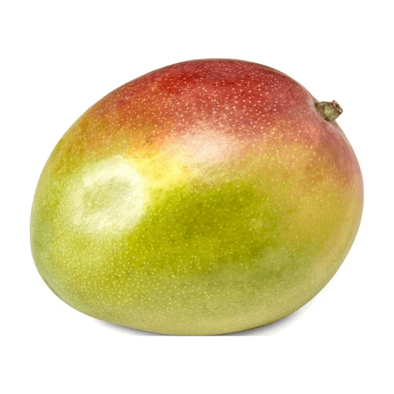

Mangoes are referred to as the "king of fruits" for several reasons.
Mangoes are sweet which makes them very delicious.
The only downside is that some mangoes are sour.
Mangoes are rich in vitamins and minerals. They aren't too bad for your health.

Mangoes can be used in smoothies, salads, desserts, and more.
I personally like mango smoothies because I think it is tasty.
Mangoes in desserts are also very good too.